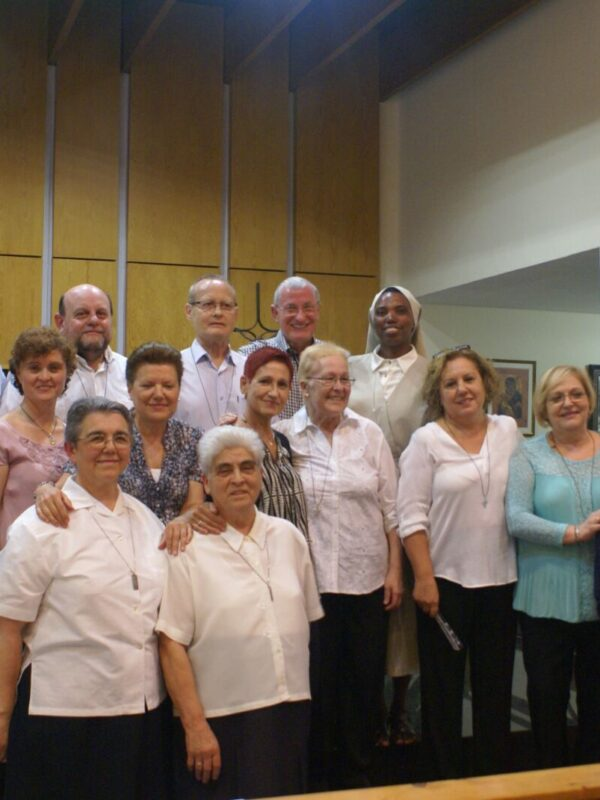
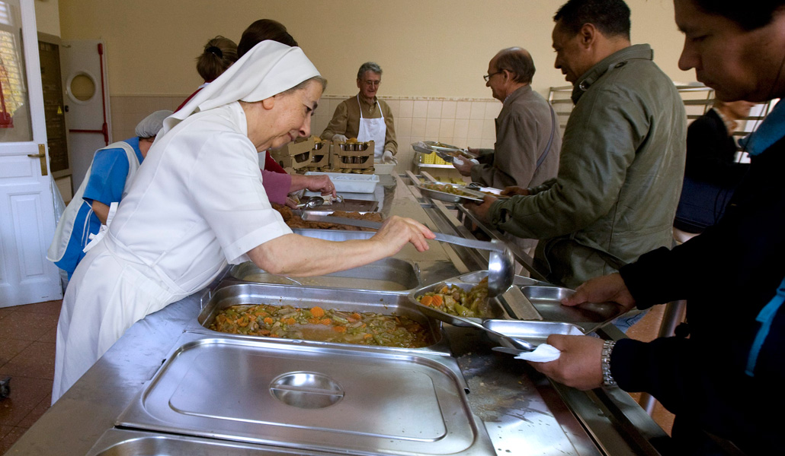

Ayudar a quien ayuda
"Hay que donar mucho amor y dignidad a todo aquel que lo necesite."

80 centros sociales reciben nuestra ayuda
Una asociación de voluntarios, sin más
Somos una asociación de voluntarios conscientes de que muchas personas y familias están necesitadas de ayuda, «de cualquier ayuda». Que aunque digan que el país va mejor, en los centros sociales no para de incrementar la demanda de auxilio.
Creemos que no podemos ser pasivos, que hay que hacer algo. Así que habiendo ya trabajado y organizado otras campañas de recogida de alimentos, decidimos ponernos otra vez en marcha con el nombre de «Ayudar a Quien Ayuda».
Donamos a quien lo necesita, y recibimos una cadena solidaria
Donamos a quien lo necesita
Proveemos a 80 centros religiosos y de acción social. Centros que acogen y dan ayuda a las personas y familias sin recursos, que necesitan dignidad e ilusión para seguir luchando por salir adelante, y sobre todo esperanza porque estos malos tiempos pasarán.
Recibimos una cadena solidaria
Además de las donaciones, recibimos algo que no es cuantificable pero sí muy sentido: el apoyo de asistentes sociales, religiosas, sacerdotes y voluntarios que cada día trabajan en esos centros, y que nos demuestran que la cadena solidaria funciona.
A dónde llega tu donación
- Comedor Ave María
- Misioneras de Jesús, María y José
- Comedor María Inmaculada
- C. Santiago Masarnau
Tres formas sencillas de ayudar
Compra en el súper
Elige lo que más se necesita en los comedores sociales: alimentos no perecederos, desayunos, higiene personal, alimentos para bebés o alimentos sin gluten.
Entrégalo en Aaqua
Envía tu donación a la atención de Aaqua.
Plaza Luis García Berlanga 1, Humera · 28223 Pozuelo de Alarcón. Lunes a viernes, 9:00 a 14:00h, avisando antes.
Avísanos
Indica tu nombre y tu teléfono. Al recibir tu donación te llamaremos y te enviaremos una foto para confirmarlo y agradecerte.
José: +34 609 10 62 94 · Berta: +34 659 05 75 92 · aaqua@hotmail.es
Campañas de recogida de alimentos
Campaña 2025
24 noviembre, 2025Campaña 2024
9 diciembre, 2024Campaña 2023
4 octubre, 2023Empresas e instituciones que nos ayudan
Deloitte·JP Morgan·Stripe·Merck·IE University·Richemont Ibérica·Fundación Ordesa·Ayuntamiento de Pozuelo·y otras 140 empresas más.